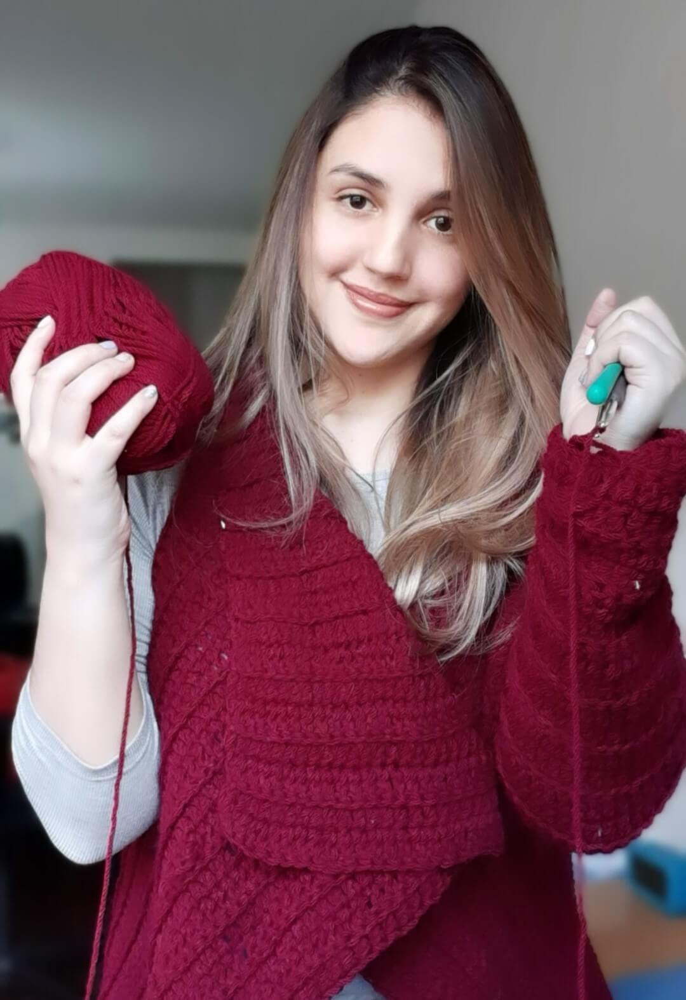
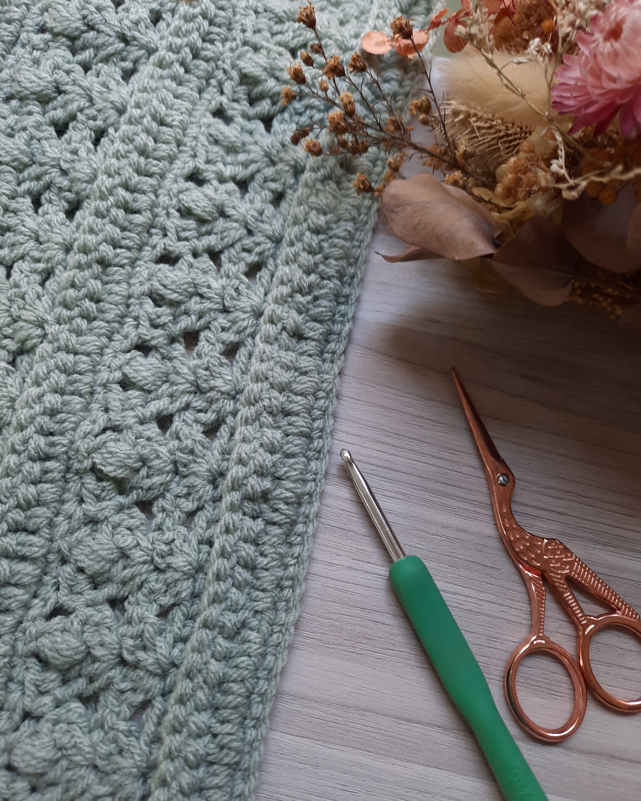

Mi nombre es Yorleana y soy una apasionada del tejido. Hago esta página con el fin de compartir lo que amo y enseñarle a más gente para que se sumen a este hermoso mundo. Si quieres conocer más sobre mí, haz click sobre mi foto!
Lo bueno del tejido es que permite dejar volar la creatividad. Yo suelo visualizar en mi cabeza lo que me gustaría crear, y luego lo plasmo mediante la lana y las agujas. Haz click en la foto de al lado para ver algunos de mis proyectos.


En la sección de patrones, podrás encontrar los patrones de algunas de mis creaciones, para que las puedas descargar sin costo! Haz click en la foto para acceder.